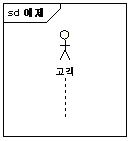
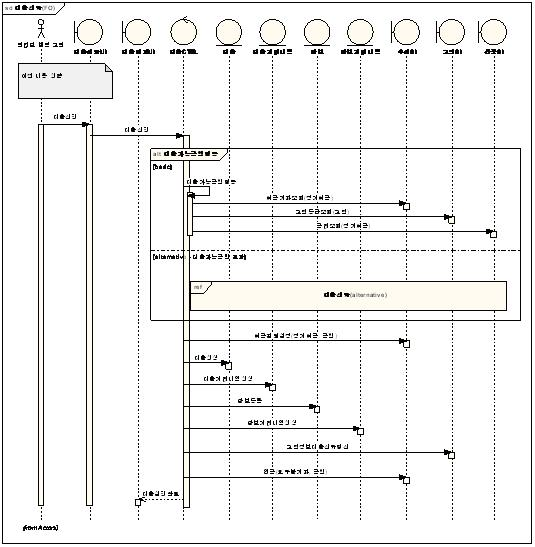

| Work Product (Artifact): 분석 시퀀스다이어그램 |
| |
 |
| 유스케이스를 바탕으로 시간 순서에 따른 분석클래스 인스턴스(객체) 간의 메시지 흐름을 분석하여 시스템의 동적인(Dynamic) 연관관계를 정의한다. |
|
Relationships
| Roles | Responsible:
| Modified By:
|
| Output From |
|
Main Description
[시퀀스다이어그램]
작성항목
-
액터
(Actor)

-
시퀀스다이어그램(분석)의
시작은 액터로 시작한다. 만일 주액터(Primary Actor)가 둘 이상일 경우는 대표 하나로부터
시작하고 노트로 다른 액터를 표기한다. 유스케이스 다이어그램에서 액터와 유스케이스 간의 Communication
Line이 시퀀스다이어그램(분석)에서는 해당 객체에 다수의 메시지를 보내는 형태로
상세화된다.
-
클래스
(Class)
-
유스케이스
분석 태스크에서의 분석클래스는 각각의 타입을 갖는다. 이 타입을 갖는 클래스는 UML의 stereotype을 지정하여 표현한다. 특히 Boundary
클래스, Control 클래스, Entity 클래스는 Icon 형태로 표현 가능하다.
-
Boundary 클래스 : 클래스다이어그램(분석) 산출물 작성 표준 참조.
-
Control 클래스 : 클래스다이어그램(분석) 산출물 작성 표준 참조.
-
Entity 클래스 : 클래스다이어그램(분석) 산출물 작성 표준 참조.
-
오퍼레이션 (Operation) : 클래스다이어그램(분석) 산출물 작성 표준 참조.
분석단계에서
오퍼레이션은 한글로 작성하고, 오퍼레이션은 메시지를 받는 쪽에 추가되는 것이므로 “~요청, ~요청하다” 와 같이 호출하는 입장에서
작성하지 않는다.
-
메시지
(Message)
-
-
서로 다른 객체 간의 상호 작용을 나타낸다. 이러한 메시지는 향후 클래스의 오퍼레이션으로 구현된다. Return 메시지는 기본적으로
표현하지 않는다. 다만 중요하다거나 꼭 나타내야만 하는 경우에 점선으로 나타낼 수 있다.

작성스타일
-
유스케이스의
처리흐름별로 시퀀스다이어그램을 작성
-
유스케이스의
기본흐름(Basic Flow)과 대안흐름(Alternative Flow) 각각에 대해
시퀀스다이어그램(분석)을 작성하는 스타일.
즉, 시퀀스다이어그램(분석)은 유스케이스 단위로
작성하므로 이 스타일의 경우는 하나의 유스케이스에 대해 하나 이상의 시퀀스다이어그램(분석)이
작성된다.
-
유스케이스의
처리흐름을 하나의 시퀀스다이어그램으로 작성
-
유스케이스의
기본흐름과 대안흐름을 하나의 시퀀스다이어그램에 통합하여 작성하는 스타일. 즉, 유스케이스 당 하나의
시퀀스다이어그램(분석)이 작성된다.
|
Properties
| Optional |  |
| Planned | |
Illustrations
Key Considerations
작성시
고려사항
-
다음과
같이 비즈니스 트랜잭션 처리 유형의 유스케이스에 대해서는 시퀀스다이어그램(분석) 을 반드시 작성한다.
-
-
중요한(핵심)
비즈니스 로직일 때
-
매우
복잡하거나 모호하다고 판단될 때
-
기능적으로
커버리지가 큰 로직일 때
-
시뮬레이션
레벨로 검증할 필요가 있는 비즈니스 로직일 때
-
시퀀스다이어그램에서
Boundary 클래스는 변경에 대한 유지가 어려운데 이러한 경우는 화면분석을 먼저 시작하고 이 중 대표화면을 Boundary 클래스로 사용할 수 있다.
-
시퀀스다이어그램(분석)은
유스케이스 단위로 작업한다
|
Tailoring
| Impact of not having |
미작성시
영향
-
유스케이스가
실행되기 위한 분석클래스 도출이 어렵다.
-
유스케이스에
대해 시간의 순차적인 흐름에 따른 메시지 흐름을 파악하기 어렵다.
-
각
분석클래스의 오퍼레이션(Operation)을 정의하기 어렵다.
-
클래스다이어그램(분석)에
도출된 클래스와 시퀀스다이어그램(분석)에서 도출된 객체가 상호 대응되는지 검증하기 어렵다.
-
클래스다이어그램(분석)에
도출된 클래스의 오퍼레이션(Operation)과 객체 간 메시지가 상호 대응되는 지 검증하기 어렵다.
-
동적구조에
대한 정형화된 패턴을 찾기 어렵고 따라서 컴포넌트나 프레임워크를 통한 재사용 기회를 포착하기 어렵다.
-
어떤
클래스가 유스케이스 기능을 적절히 구현하고 있는지 직관적으로 판단하기 어려워 잠재적인 추적성(Traceability) 갭이 발생할 수 있다.
|
| Reasons for not needing |
작성이
불필요한 경우
-
시퀀스다이어그램(분석)은
필수로 작성하도록 한다. 단, 단순 반복적인 작업에 해당되는 정보관리성 유스케이스, 단순 검색 및 정보취합 유스케이스에 대해서는 패턴화하거나 생략할 수 있다.
-
다음과
같은 경우는 대부분 비즈니스 트랜잭션 처리 유형의 유스케이스에 해당되는 것으로 시퀀스다이어그램(분석)을 반드시 작성한다.
-
중요한(핵심)
비즈니스 로직일 때
-
매우
복잡하거나 모호하다고 판단될 때
-
기능적으로
커버리지가 큰 로직일 때
-
시뮬레이션
레벨로 검증할 필요가 있는 비즈니스 로직일 때
|
| Representation Options |
제출시
고려사항
|
|